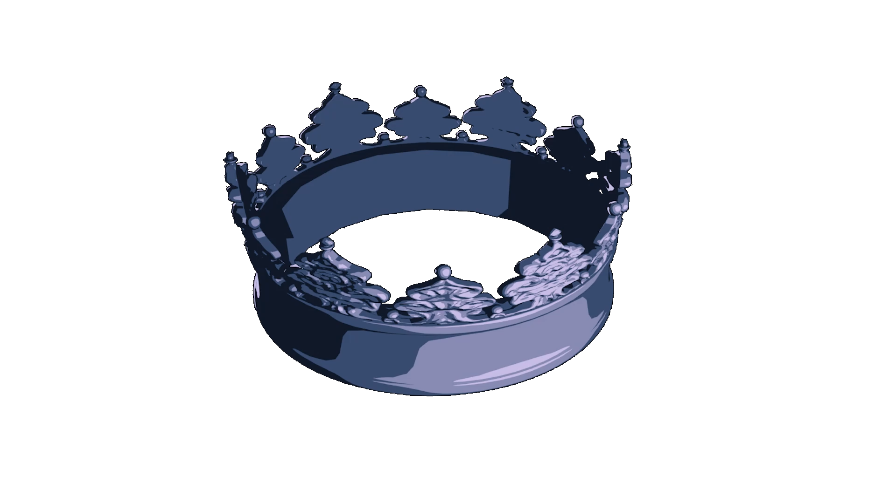

Auditions are open from Wednesday, October 21 to Monday, November 2 at 11:59 PM. Please fill out the Google Form, where you will be asked to submit a video link to a 1–2 minute Shakespearean monologue. We encourage you to read one of the provided monologues but are also excited to hear any monologue you’d like to bring to the table!
Callbacks will be held in-person on November 5 / 6 depending on actor availability. Callback invitations will go out by November 3 and will consist of reading sides that will be shared in advance.
We are casting for the role of Brutus, but you may also be considered for additional roles and/or ensemble tracks in the production.
Performances will take place the evenings of March 13–15 at a venue in Bushwick, Brooklyn.
Rehearsals will primarily take place on weekday evenings and weekend afternoons, and will be planned around your schedule. We also work full-time jobs, so we understand having prior commitments and strive to be as flexible as possible. You can expect to be called 1–3 times a week in January and February, with more frequent rehearsals in late February and early March as the show approaches.
MARCUS BRUTUS: A conflicted idealist caught between her loyalty to her good friend Caesar and her commitment to doing the Right Thing. Has the strongest moral compass in the room, but it doesn’t always point to true north.
While Brutus will be portrayed as a woman and use she / her pronouns in this production, we encourage actors of all gender identities to audition.
Please note that monetary compensation is not available for any of these roles or positions.